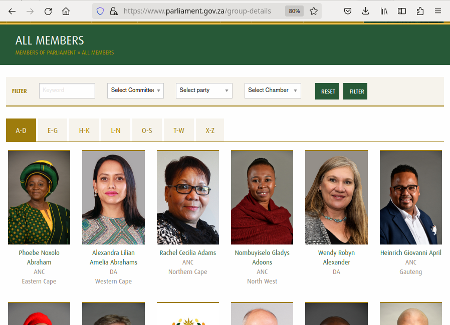
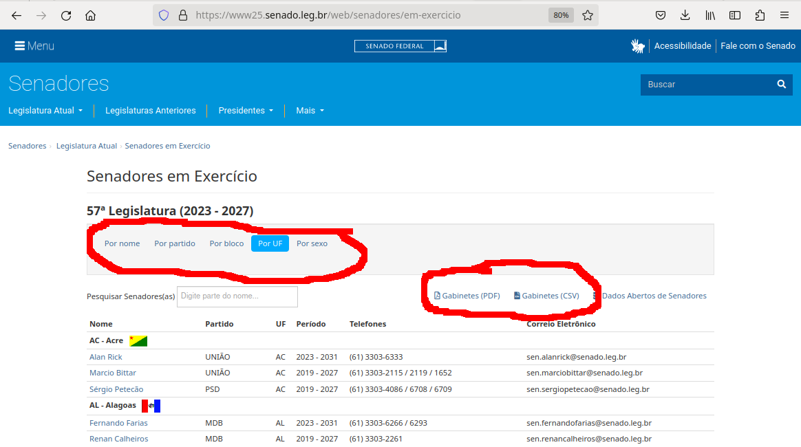

Introduction: What is web scraping?
Last updated on 2023-07-11 | Edit this page
Overview
Questions
- What is web scraping and why is it useful?
- What are typical use cases for web scraping?
Objectives
- Introduce the concept of structured data
- Discuss how data can be extracted from web pages
- Introduce the examples that will be used in this lesson
What is web scraping?
Web scraping is a technique for extracting information from websites. This can be done manually but it is usually faster, more efficient and less error-prone to automate the task.
Web scraping allows you to acquire non-tabular or poorly structured data from websites and convert it into a usable, structured format, such as a .csv file or spreadsheet.
Scraping is about more than just acquiring data: it can also help you archive data and track changes to data online.
It is closely related to the practice of web indexing, which is what search engines like Google do when mass-analysing the Web to build their indices. But contrary to web indexing, which typically parses the entire content of a web page to make it searchable, web scraping targets specific information on the pages visited.
For example, online stores will often scour the publicly available pages of their competitors, scrape item prices, and then use this information to adjust their own prices. Another common practice is “contact scraping” in which personal information like email addresses or phone numbers is collected for marketing purposes.
Web scraping is also increasingly being used by scholars to create data sets for text mining projects; these might be collections of journal articles or digitised texts. The practice of data journalism, in particular, relies on the ability of investigative journalists to harvest data that is not always presented or published in a form that allows analysis.
Before you get started
As useful as scraping is, there might be better options for the task. Choose the right (i.e. the easiest) tool for the job.
- Check whether or you can easily copy and paste data from a site into spreadsheet software. This might be quicker than scraping.
- Check if the site or service already provides an API to extract structured data. If it does, that will be a much more efficient and effective pathway. Good examples are the GitHub API, the Mastodon APIs or the YouTube comments API.
- For much larger needs, Freedom of information requests can be useful. Be specific about the formats required for the data you want.
Example: scraping government websites for contact addresses
In this lesson, we will extract contact information from government websites that list the members of various jurisdictions.
Let’s start by looking at the current list of members of the South African parliament, which is available on the South African parliament website.
This is how this page appears in June 2023:
{alt=Image showing top part of the South African parliament webite https://www.parliament.gov.za/group-details}
There are several features (circled in the image above) that make the data on this page easier to work with. The search, reorder, refine features and display modes hint that the data is actually stored in a (structured) database before being displayed on this page. The data can be readily downloaded either as a comma separated values (.csv) file or as XML for re-use in their own database, spreadsheet or computer program.
Even though the information displayed in the view above is not labelled, anyone visiting this site with some knowledge of South Africa geography and politics can see what information pertains to the politicians’ names, the geographical area they come from and the political party they represent. This is because human beings are good at using context and prior knowledge to quickly categorise information.
Computers, on the other hand, cannot do this unless we provide them with more information. Fortunately, if we examine the source HTML code of this page, we can see that the information displayed has some structure:
OUTPUT
<div class="cell" id="all-members-tabs-wrapper">
<group-details members='{"a-d":[{"id":1,"full_name":"Phoebe Noxolo Abraham","profile_pic_url":"\/storage\/app\/media\/MemberImages\/1.jpg","party":"ANC","province":"Eastern Cape","national":0},{"id":2,"full_name":"Alexandra Lilian Amelia Abrahams","profile_pic_url":"\/storage\/app\/media\/MemberImages\/2.jpg","party":"DA","province":"Western Cape","national":0},{"id":3,"full_name":"Rachel Cecilia Adams","profile_pic_url":" ...member-count='450'></group-details>
</div>
(...) Thanks to this structure, we could relatively easily instruct a computer to look for all parliamentarians from the Northern Cape and list their names and parties.
Structured vs unstructured data
When presented with information, human beings are good at quickly categorizing it and extracting the data that they are interested in. For example, when we look at a magazine rack, provided the titles are written in a script that we are able to read, we can rapidly figure out the titles of the magazines, the stories they contain, the language they are written in, etc. and we can probably also easily organize them by topic, recognize those that are aimed at children, or even whether they lean toward a particular end of the political spectrum. Computers have a much harder time making sense of such unstructured data unless we specifically tell them what elements data is made of, for example by adding labels such as this is the title of this magazine or this is a magazine about food. Data in which individual elements are separated and labelled is said to be structured.
Let’s look now at the current list of members for the Brazilian Senate.
{alt=Image of the top of the Brazilian Senate members website https://www.parliament.gov.za/group-details with options to download data as a CSV file and options for sorting based on gender, party, caucus and region circled}
This page also displays a list of names, political and geographical affiliation. Here is part of the code for this page:
OUTPUT
<div class="sf-large-table-container">
<table id="senadoresemexercicio-tabela-senadores"
class="table table-condensed"
title="Lista de senadores em exercício">
<thead>
<tr>
<th>Nome</th>
<th>Partido</th>
<th>UF</th>
<th>Período</th>
<th>Telefones</th>
<th>Correio Eletrônico</th>
</tr>
</thead>
<tbody>
<tr class="search-group-row">
<td colspan="6">
<a href="#"
name="AC"></a>
<strong>AC - Acre</strong>
<img
src="https://www.senado.leg.br/senadores/img/bandeiras/AC_p.gif"
alt="Bandeira de AC - Acre"/> </td> </tr> <tr> <td class="nowrap"><a href="https://www25.senado.leg.br/web/senadores/senador/-/perfil/5672">Alan Rick</a></td> <td>UNIÃO</td> <td>AC</td> <td>2023 - 2031</td> <td class="break-word">(61) 3303-6333</td> <td>sen.alanrick@senado.leg.br</td> </tr><tr> <td class="nowrap"><a href="https://www25.senado.leg.br/web/senadores/senador/-/perfil/285">Marcio Bittar</a></td> <td>UNIÃO</td> <td>AC</td> <td>2019 - 2027</td>(...)There are several features (circled in the image above) that make the data on this page easy to work with. The search, reorder features and display modes hint that the data is actually stored in a (structured) database before being displayed on this page. The data can be readily downloaded either as a comma separated values (.csv) file for re-use in their own database, spreadsheet or computer program or as a pdf for offline reading.
What if we wanted to download the South African parliament members dataset and, for example, compare it with the Brazilian senate dataset to analyze gender representation, or the representation of political forces in the two groups? We could try copy-pasting the entire table into a spreadsheet or even manually copy-pasting the names and parties in another document, but this can quickly become impractical when faced with a large set of data. What if we wanted to collect this information for every country that has a national legislature?
Fortunately, there are tools to automate at least part of the process. This technique is called web scraping.
Callout
“Web scraping (web harvesting or web data extraction) is a computer software technique of extracting information from websites.” (Source: Wikipedia)
Web scraping typically targets one web site at a time to extract unstructured information and put it in a structured form for reuse.
In this lesson, we will continue exploring the examples above and try different techniques to extract the information they contain. But before we launch into web scraping proper, we need to look a bit closer at how information is organized within an HTML document and how to build queries to access a specific subset of that information.
|– |– |– | | Legislative body | url | Downloadable | |– |– |– | | Canadian House of Commons | https://www.noscommunes.ca/members/fr/election-candidates | Yes | | Kenyan National Assembly | http://www.parliament.go.ke/index.php/the-national-assembly/mps | No | | US Congress | https://www.congress.gov/members | No | | Russian Duma | http://duma.gov.ru/duma/deputies/ | | | | http://api.duma.gov.ru/pages/dokumentatsiya/spisok-otrasley-zakonodatelstva | Yes | | India Rajya Sabha | https://sansad.in/rs/members | Yes | | UK House of Commons | https://members.parliament.uk/members/commons | No |